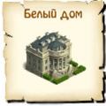

Получено: файл; исходный URL. Исходный файл без перекодирования; авторство не установлено. Страница: источник.
Белый Дом
браузерная версия; платформа и дата редакции не установлены- Тип
- Постройка
- Версия и дата
- браузерная версия; платформа и дата редакции не установлены
Данные по источнику · браузерная версия; платформа не определена · дата редакции не установлена
Предварительно: Автоматическое чтение цифровых пиктограмм и их подписей; знак ? означает нераспознанное количество, подписи могут содержать ошибки источника. Требуется ручная сверка каждой стадии.. Требуется сверка.
- Исходные подписи и цифры в первой колонке
- [Белый Дом] | [Доступен на 31-м уровне] | или открыть | за | 31 | [Зомбаксы] | [Стоимость постройки] | 1500000 | [Опыт за каждый этап строительства] | 15000 | 200 | 300 | 500 | [Суммарный опыт] | 16000
- Стадии по пиктограммам
- Стадия 1: 10 × Брус секвойи + 50 × Любовь + 20 × Огонь Стадия 2: 20 × Лист золота + 30 × Брус секвойи + 10 × Блоки Стадия 3: 13 × Синяя черепица + 13 × Нефть + 13 × Колоннада
Данные по источнику · Мой Мир (Mail.ru), историческая таблица · дата редакции не установлена
Предварительно: Таблица источника; обозначения валют/уровней могут быть пиктограммами и в тексте отсутствовать. Сопоставление названий пристаней и флага Беларуси выполнено по названию и требует сверки.. Требуется сверка.
- Название и первая колонка источника
- Белый дом 1500000 31 ур. или 31
- Опыт, стадии, производство и модернизация
- Опыт: 16000 = 15000+200+300+500 Стадии строительства: 10 Брус секвойи + 50 Любовь + 20 Огонь 20 Лист золота + 30 Брус секвойи + 10 Блоки 13 Синяя черепица + 13 Нефть + 13 Колоннада Создает: 3 Кварц = 10 Стекло + 1 Трансформатор 1 Мрамор = 10 Блоки + 10 Любовь 1 Белая краска = 50 Алые розы + 5 Любовь
Данные по источнику · браузерная версия; платформа не установлена · дата редакции списка не установлена
Предварительно: Прочитан список. Имена файлов пиктограмм приводятся как есть: они не гарантируют идентификацию материала. Alt-атрибуты источника содержат ошибки. Отдельная статья и дата не проверены.. Требуется сверка.
- Сведения из списка, включая имена файлов пиктограмм
- [рисунок: Beliy_dom.png] Доступен с: 31 уровня Стоимость: 1 500 000 монет Даёт опыта: 16000 (15000+200+300+500) Стадии строительства: 1. 10 [рисунок: Brus_sekvoyi.png] +50 [рисунок: Lybov.png] +20 [рисунок: Ogon.jpg] 2. 20 [рисунок: List_zolota.png] +30 [рисунок: Brus_sekvoyi.png] +10 [рисунок: Bloki.png] 3. 13 [рисунок: Sinyaya_cherepica.png] +13 [рисунок: Neft.png] +13 [рисунок: Kolonnada.png] Производит: 1. 10 стёкол + 1 трансформатор = 3 кварца 2. 10 блоки + 10 любви = 1 мрамор 3. 50 алых роз + 5 любви = 1 белая краска


Данные по источнику · браузерная игра; платформа страницы не уточнена · 11.01.2014 — публикация; редакция неизвестна
Предварительно: Прочитана конкретная строка; старые сведения, у источника встречаются опечатки. Возможны заимствования, независимость от других сайтов не доказана.. Требуется сверка.
- Стадии по Zommbie
- 1: 10 бруса секвойи + 50 любви + 20 огня; 2: 20 листов золота + 30 бруса секвойи + 10 блоков; 3: 13 синей черепицы + 13 нефти + 13 колоннад.
- Возможности и рецепты по Zommbie
- 3 кварца = 10 стекла + 1 трансформатор; белая краска = 50 алых роз + 5 любви; зелёный мрамор = 10 блоков + 10 любви.
Данные по источнику · браузерная социальная версия; сеть не указана · 03.10.2012
Предварительно: Фанатский источник; возможное копирование и изменения после публикации не исключены. Неподписанные иконки определены предварительно по именам файлов.. Требуется сверка.
- Условия
- 31 уровень, цена 1 500 000 монет, 16 000 опыта по таблице.
- Стадии по пиктограммам
- 1: 10 бруса секвойи + 50 любви + 20 огня; 2: 20 листов золота + 30 бруса секвойи + 10 блоков; 3: 13 синей черепицы + 13 нефти + 13 колоннад. Названия определены по файлам и требуют сверки.
- Производство, подписано текстом
- 10 стёкол + 1 трансформатор = 3 кварца; 10 блоков + 10 любви = 1 мрамор; 50 алых роз + 5 любви = 1 белая краска.
Данные по источнику · историческая браузерная игра, площадка не указана · 05.05.2012 — дата публикации; дата редакции неизвестна
Предварительно: Сопоставлено по единственному точному названию; различные версии или одноимённые объекты могут различаться. Названия файлов и alt пиктограмм сохранены как подписи, не заменяют проверенную расшифровку; изображения и цены требуют ручной сверки. Независимость от zombi-ferma.ru и других сайтов не установлена.. Требуется сверка.
- Текст и пиктограммы источника
- [изображение: m_whitehouse.png] Доступен с: 31 уровня Стоимость: 1 500 000 монет Даёт опыта: 16000 (15000+200+300+500) Стадии строительства: 1. 10 брусьев секвойи + 50 любви + 20 огня 2. 20 листов золота + 30 брусьев секвойи + 11 белой краски 3. 13 синей черепицы + 13 нефти + 13 коллонад Производит: 1. 10 стёкол + 1 трансформатор = 3 кварца 2. 10 блоки + 10 любви = 1 мрамор 3. 50 алых роз + 5 любви = 1 белая краска
Связанные сущности
нет проверенных связей — требуется сверка.
Источники
- Каталог построек: строка и пиктограммы; дата неизвестна
- Zombiemail: таблица построек, часть 2; версия Мой Мир
- ZOMBIA: прочитана карточка в каталоге
- Адрес отдельной карточки, отдельный доступ не проверен
- Zommbie.at.ua: раздел 38 построек, запись 2014 года
- Прочитанная отдельная страница
- ZF.3dn: историческая карточка постройки